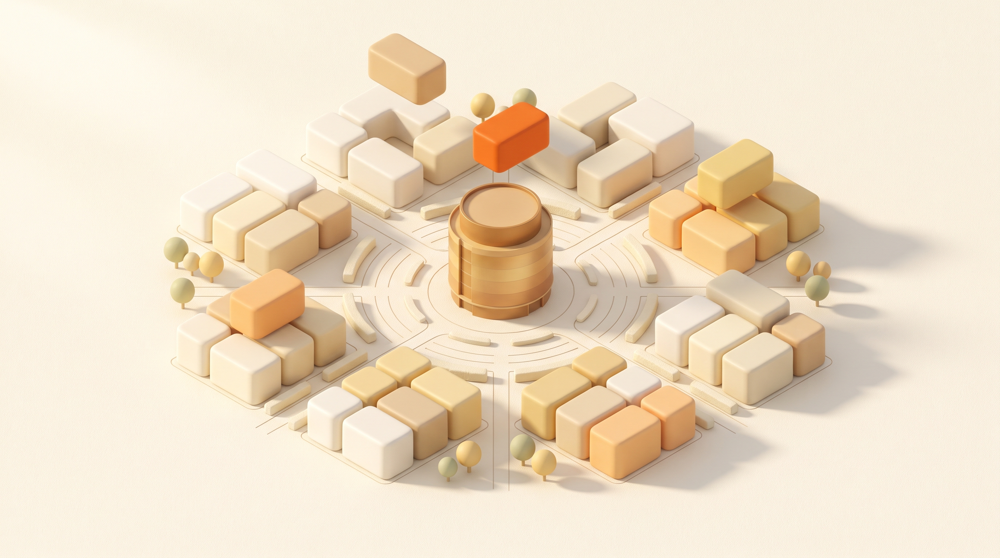

AIsuperpowers builds AI systems that pay for themselves. Where the work stands today:
Most companies do not have an AI problem. They have small losses that never reach a budget line: a review that takes days instead of minutes, an error that becomes an approved price, an answer found too late to matter.
The quietest drain in a large company is memory: what one team learns, the next relearns, and when a person leaves, years of judgment leave too. Our answer is the brain, an architecture we pioneered and run ourselves: one living memory of the organization, with every system connected to it.

Blocks arrive, and click in People Data Process Systems One shared memoryFour engagements, four verified numbers.
One platform that became the company's single front door to AI. People learn on it: an academy with an eight-module certification and a super-user program that turns employees into builders. People work on it: a library of assistants connected to company data, and an internal store of approved solutions. And leadership governs on it: every request for a new connection, key, or capability passes through risk-tiered approval, and every solution reports its own cost and return.
The experiments stopped being invisible. Eleven assistants run in production and have been launched 1,753 times. Adoption stands at 136 active users and 36 percent feature adoption, on a curve still in its first quarter. Five solutions are live in the internal store at 100 percent security compliance. The company now sees its entire AI life on one screen it owns.
We built an engine that reads the full dossier the way the best auditor would: every submitted price checked against import and retail documents, line by line, with the reasoning shown for each item. On a live 30-product case it matched 28 of 30 exactly, flagged the true gaps, and caught mistakes the human review had already let through. Days of checking became minutes, with the evidence attached.
A question asked in either language now returns the answer in seconds, with the source page displayed beside it and the exact supporting passage highlighted. Nothing is asserted that cannot be shown. More than 3,700 sections of regulation and market reporting are covered, and the same architecture accepts any new document set, isolated per institution.
A telecom operator's entire commercial picture now lives on one screen: revenue, receivables, service, customers. Leadership asks in plain words and gets the answer from live data, with a predictive layer watching revenue and customer loss before they move. The report cycle stopped being the speed limit of decisions.
We mapped the whole operation and returned it as a working eight-module prototype: a client assistant on the channel customers already use, document intake that reads paperwork on arrival, receivables that chase themselves, and jobs visible end to end. Priced strictly from the owner's own numbers, the model shows roughly OMR 470,000 over three years, and it is labeled as the projection it is. The waste now has a price, and a plan.
Five disciplines, each proven by the work in this document.
Everything an organization needs to adopt AI as one company: learning, working, governing, measuring.
Proven in 01Our pioneering architecture: one organizational memory that every system connects to, so nothing learned is ever lost.
Built, and running our own operation dailySystems that read regulation, contracts, and dossiers, answer with proof, and validate submissions line by line.
Proven in 02 and 03The company on one screen, questions asked in plain words, answers from live data with prediction built in.
Proven in 04A whole operating company remapped around AI, with the value priced from the client's own numbers before anything is built.
Proven in 05We sit inside the actual workflows and come back with every loss named and priced. No proposal before that.
Senior engineers build on the client's own environment. Working systems enter daily use in weeks, measured from the first day.
We train the client's people to run, improve, and extend everything, then we step back. Dependence on us is a design failure.
All systems run on the client's own infrastructure or sovereign cloud. Data never leaves the client's walls. The client owns the code without exception, and engagements are fixed in scope and price. It aligns with the Kingdom's data-sovereignty expectations, including the Personal Data Protection Law and Vision 2030.
Aws Naser
Aws leads every engagement personally. He hears a business problem stated plainly, in Arabic or English, and carries it to a running system without losing anything in translation. He is the architect behind every system in this document.
Clients work directly with him and with the senior engineers who build their systems. No account layers, no juniors.